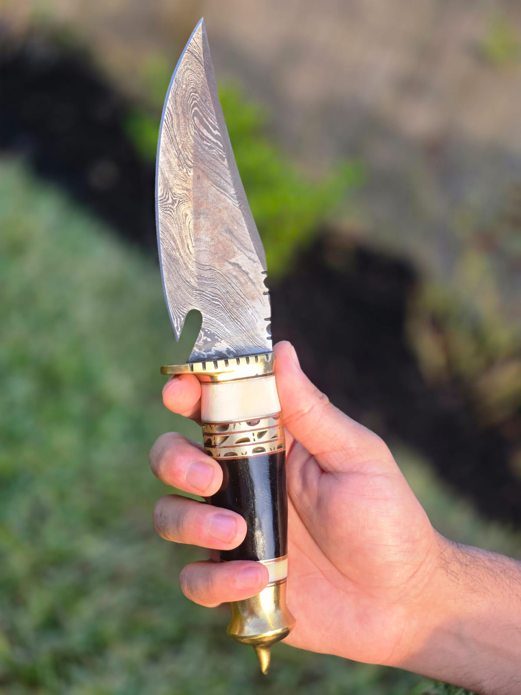
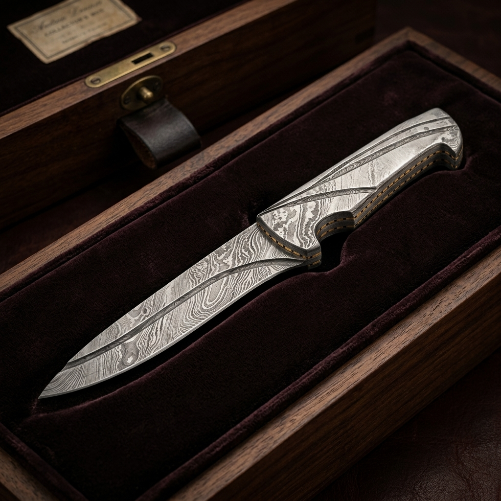

Top Handmade Knives Every Chef Should Own

By Master Usman
Master Bladesmith • 12 Min Read • Technical Field Notes
As a chef, you know how important the right tools are. High-quality handmade chef knives can boost your skills and make prep work easier. With the best knives, chopping and slicing become precise and enjoyable.
Choosing high-quality handmade chef knives can elevate your cooking. These knives offer a superior cutting experience. They help you chop, slice, and dice with ease. Whether you're a pro or a home cook, the right knife can enhance your dishes.
bookmark Key Takeaways
- • High-quality handmade chef knives can improve your culinary skills
- • Best handmade knives provide a superior cutting experience
- • Investing in handmade knives can elevate your cooking experience
- • Handmade knives are designed for precision and ease of use
- • Having the right knife can make a difference in the quality of your dishes
01 / Understanding the Art of Handmade Knives
Knives come in many types, like the best handmade camping knives and machine-made ones. But, handmade knives from Damascus Steel are special. They have unique qualities and top-notch quality.
The Craftsmanship Behind Custom Blades
Making custom blades is a labor of love that requires great skill and detail. Each knife is made to give a precise cut and a comfy grip. It's a pleasure to use in the kitchen or outdoors.
Machine-Made vs. Handmade Knives
Machine-made knives might be cheaper, but they can't match handmade knives. Here's why:
- ✓ Unique characteristics: Handmade knives have special traits that make each one unique.
- ✓ Superior quality: Handmade knives use top materials and craftsmanship. They're more durable and last longer.
- ✓ Attention to detail: Handmade knives focus on detail, ensuring a sharp cut and a comfortable hold.

Professional chefs choose handmade knives for their quality and uniqueness. They value the care and skill put into each knife, which is why they are essential in any kitchen.
02 / Essential Types of Handmade Knives
Having the right exclusive handmade kitchen knives can change your cooking experience. A good kitchen needs a variety of best handmade knives for different tasks and ingredients.
Some key types of handmade knives include:
-
restaurant_menu
Chef's Knives
Great for chopping, slicing, and mincing ingredients seamlessly.
-
colorize
Paring Knives
Perfect for meticulous tasks like peeling and coring fruits or vegetables.
-
flatware
Slicing Knives
Expertly made for slicing meats, cheeses, and delicate culinary creations.
Getting a set of exclusive handmade kitchen knives can take your cooking to new heights. With the best handmade knives, you get top-notch performance, durability, and a special touch to your kitchen. Choosing the right handmade knives makes cooking more fun and efficient.
| Knife Type | Description | Benefits |
|---|---|---|
| Chef's Knife | Multi-purpose knife for chopping, slicing, and mincing | Versatility, ease of use |
| Paring Knife | Small knife for peeling and coring fruits and vegetables | Precision, control |
| Slicing Knife | Long, thin knife for slicing meat, cheese, and other delicate foods | Smooth cuts, even slices |
03 / The Magic of Damascus Steel in Custom Knives
Damascus steel is a top pick for handmade knives. It's famous for its unique patterns and strength. This makes it a favorite for best handmade hunting knives. But what's so special about it, and how do you keep your handmade knives made from Damascus steel in top shape?

Understanding Damascus Steel Patterns
Damascus steel gets its patterns from folding and hammering. This creates layers with different carbon contents, making the steel strong and giving it a unique look.
Benefits of Damascus Steel Knives
Why go for handmade knives made from Damascus steel? They're incredibly strong and durable, perfect for hunting and outdoor activities. They also resist corrosion and keep their edge well, making them ideal for chefs and outdoorsmen.
Care Requirements for Damascus Blades
To keep your best handmade hunting knives in great shape, proper care is key. Clean and dry the blade after each use. Store it in a dry place to avoid corrosion. By following these steps, your handmade knives made from Damascus steel will stay in excellent condition for years.
| Care Requirement | Explanation |
|---|---|
| Cleaning | Use a soft cloth and mild soap to clean the blade |
| Drying | Dry the blade thoroughly after cleaning to prevent corrosion |
| Storage | Store the knife in a dry place, such as a knife block or on a hook |
04 / Choosing the Perfect Chef's Knife for Your Needs
When picking a chef's knife, aim for a high-quality handmade chef knife that fits your cooking style. With many choices, finding the right one can be tough. Think about blade length, material, and handle type to help decide.
The best handmade knife is crucial for any chef. It's important to find the perfect one. Here are some key things to consider:
- • Blade length: Pick a length that feels right in your hand and matches your cooking style (standard is 8-12 inches).
- • Material: Look for durable, corrosion-resistant steel with high carbon retainment.
- • Handle type: Choose a handle that's ergonomic, comfortable to hold, and hygienic to clean.
Investing in a high-quality handmade chef knife makes cooking easier and more precise. The best handmade knife is a valuable investment for any chef. It will greatly improve your cooking experience. Think about your cooking style and the dishes you usually make.
| Knife Type | Blade Length | Material | Handle Type |
|---|---|---|---|
| Chef's Knife | 8-12 inches | High-carbon steel | Wood or premium composite |
| Paring Knife | 2-4 inches | Stainless steel | Wood or premium composite |
| Cleaver | 6-12 inches | High-carbon steel | Wood or brass-riveted bone |
05 / Pakistani vs. Western Handmade Knife Styles
Choosing the perfect knife can be tough, especially between Pakistani and Western styles. Each has its special features. The right knife for you depends on what you like and how you cook. If you're searching for the best handmade camping knives or exclusive handmade kitchen knives, knowing the differences is key.
auto_awesome Traditional Pakistani Crafting
Pakistani knives are famous for their unmatched sharpness and precision. They are forged traditionally with premium high-carbon Damascus steel and feature elegant curved contours that optimize slicing angles. It is a traditional art requiring generations of skill.
hardware European Bladesmithing Techniques
European-style knives are engineered with thicker, highly durable steel cores. They emphasize a straighter, robust blade silhouette and a prominent finger guard. European crafting focuses heavily on mechanical versatility, heavy-duty durability, and ease of resharpening.
The choice between Pakistani and Western knives depends on your cooking style. If you love precise, razor-sharp cuts and delicate culinary work, a Pakistani Damascus steel knife might be best. For robust utility and high versatility, a European-style knife could be your top choice.
06 / Essential Features of High-Quality Kitchen Knives
When looking for high-quality handmade chef knives, there are key features to check. These features greatly affect the knife's performance and longevity. Look at the steel type, construction, and handle design.
A top best handmade knife is made from high-carbon steel. This steel is strong, durable, and keeps a sharp edge. The knife's construction, with a full or half tang, is also crucial for balance and stability. The handle should be tough, like wood or bone, and fit well in your hand.
Key Performance Indicators
-
✓
Sharpness: A blade must arrive razor-sharp and maintain its edge under high utilization.
-
✓
Balance: Center of gravity must feel natural at the bolster to ensure swift, fatigue-free control.
-
✓
Ergonomics: The handle profile must match the biological curves of the hand, minimizing strain.
| Feature | Description |
|---|---|
| Steel | High-carbon steel for strength, extreme durability, and maximum edge sharpness retention |
| Construction | Full tang or integrated half tang to guarantee balance, structural integrity, and leverage |
| Handle | Bespoke handle forged from wood or exotic bone, providing comfortable grip and slip resistance |
07 / Maintaining Your Handmade Knife Collection
To keep your handmade knives in great shape, regular care is key. You've chosen the finest handmade knives. Now, it's time to learn how to take care of them. Proper storage, sharpening, and daily care will make your knives last longer and work better.
1. Secure Storage
Store knives in a dry space away from moisture. A dense wood block or magnetic wooden strip keeps blades protected and separated. Never keep in damp locations.
2. Whetstone Honing
Sharpen using a quality whetstone or polishing steel. Work systematically from the blade's heel to the tip to keep edge geometry correct.
3. Hand Washing
Wash immediately after use by hand using mild dish soap, then dry thoroughly with a soft cloth. Never place in dishwashers as chemicals and heat warp handles.
| Knife Type | Storage | Sharpening | Daily Care |
|---|---|---|---|
| Damascus Steel Blades | Store in dry place, away from sunlight | Hone via high-grit whetstone | Hand wash, dry instantly, oil edge occasionally |
| Handmade Hunting Knives | Store in leather sheath or wood block | Sharpen in uniform forward direction | Avoid dishwashers and high acidic detergents |
08 / Investment Value: Handmade Knife Pricing
Investing in exclusive handmade kitchen knives can be a big deal. The price depends on the materials, craftsmanship, and how rare the knife is. Best handmade knives use top-notch materials like Damascus steel. They take a lot of skill and time to make.
Several critical variables determine the price tag of these functional works of art:
-
payments
Materials: The purity, alloy blend, and number of layers in Damascus steel, plus the rarity of handles (e.g. exotic burls, buffalo horn), directly scale production costs.
-
handyman
Craftsmanship: The bladesmith's experience, thermal quenching complexity, dynamic edge grinding, and polish time define the human value of the blade.
-
star
Rarity: One-of-a-kind bespoke commissions or highly limited batch releases command premium pricing due to collector scarcity.
Buying a high-quality, exclusive handmade kitchen knife is a smart choice for serious chefs or cooking lovers. The best handmade knife will last for years and might even increase in value. As a chef, having a high-quality knife can make all the difference in the world. It's an investment in your craft and your passion.
09 / Building Your Essential Handmade Knife Collection
When starting your collection of handmade chef knives, think about your cooking habits. Investing in these knives can make your cooking better and last longer. Look for knives that match your cooking style, materials, and how they're made.
When picking knives, consider the steel, handle, and balance. Exclusive handmade kitchen knives often have special designs and details. Having a few key knives can start a great collection and improve your cooking.
- → Research different types of handmade knives and their specific utility.
- → Read reviews and converse with fellow cooks regarding artisan knives.
- → Prioritize exclusive blades incorporating distinct custom craftsmanship or steel forge patterns.
Building your collection with care means you'll enjoy cooking with these knives for many years to come.
10 / Conclusion: Elevate Your Culinary Journey
Investing in premium handmade knives can change your cooking game. These blades, made from Damascus steel, are top-notch. They offer precision, durability, and a unique look that mass-produced knives can't match.
Adding these knives to your kitchen opens up new possibilities. You'll have more control and creativity in your cooking. This lets you confidently make any dish you want.
Whether you're a pro chef or a home cook, handmade knives make a big difference. They make slicing and dicing easy and enjoyable. Plus, they're a joy to use, thanks to the skill of the artisans who make them. By choosing handmade knives, you're starting a journey of culinary excellence. Every meal will be a work of art. So, dive into the world of handmade knives and elevate your cooking to new heights.